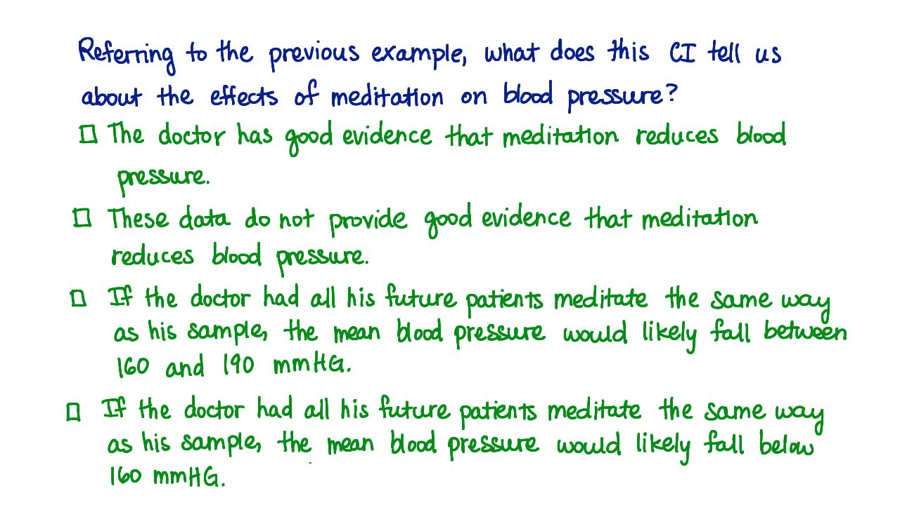

07. 17. 解释置信区间
- 解释置信区间
Start Quiz:

INSTRUCTOR NOTE:
对于上述例子，置信区间可以告诉我们关于冥想对血压（收缩压）的影响的哪些信息？（勾选所有正确的选项）
- □ 有足够的证据表明冥想可以降低血压
- □ 证据不足以表明冥想可以降低血压
- □ 如果医生教他所有的病人冥想，他们的平均血压可能会降到 160 -190 毫米汞柱
- □ 如果医生教他所有的病人冥想，他们的平均血压可能会降到 160 毫米汞柱以下